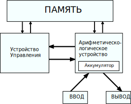

Любой компьютер как универсальный инструмент для работы с информацией устроен очень просто.
Все его части можно разделить на 3 вида: устройства обработки, хранения и обмена (ввода-вывода),
причём последние могут осуществлять обмен данными как между компьютером и человеком,
так и между другими компьютерами. С информационной точки зрения больше ничего там нет,
хотя учитывая, что компьютер — устройство электрическое, ему нужен источник питания,
кабели и т.п., но это общая часть всей электроники.
При этом каждый элемент сам делится на компоненты вышеперечисленных трёх видов.
Например, процессор относится к устройствам обработки,
но внутри себя имеет блоки собственно вычислений,
локальной памяти и обмена.
Большая часть пока ещё непонятных терминов именует конкретные детали процессора
или методы их взаимодействий.

Если не пытаться изложить здесь «кратенько» курс информатики для средней школы,
то единственное что хотелось бы напомнить — это то,
что процессор (за редкими исключениями) исполняет не программы,
написанные на каком-нибудь языке программирования (один из которых, вы, возможно, даже знаете),
а так называемый машинный код. Т.е. командами для него являются последовательности байтов,
находящихся в памяти компьютера, не имеющие ничего общего не только с каким-то человеческим языком,
но и с языком программирования высокого уровня.
Каждая команда занимает до нескольких байт, в среднем — 3-5.
Там же, в основной памяти (ОЗУ, RAM) находятся и данные.
Они могут находиться в отдельной области, а могут и быть перемешаны с кодом.
Различие между кодом и данными состоит в том, что данные — это то, над чем процессор производит операции.
А код — это команды, которые ему сообщают, какую именно операцию он должен произвести.
Одновременно в памяти располагаются множество программ, необходимых им данных и некоторое свободное место.